1088B20 engine cooling radiator - r + r
- Path
- Procedures > 10 ENGINE > 1088 ENGINE COOLING > 1088B ENGINE COOLING RADIATOR > 1088B20 engine cooling radiator - r + r
- Kind
- repair procedure (removal / refitting; the operation number is the code)
- Applies to
- all engines; all production periods
- Interactive page
- https://sloeber94.github.io/elrnDB-a147/en/#/3024903
Applies to: engines: 1.6 TS; all production periods
 Removing
Removing
 Refitting
RefittingPosition the vehicle on the ramp.
1. Disconnect the lower coolant outlet hose from the radiator and drain the engine coolant.
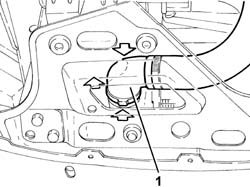
Applies to: engines: 1.6 TS; all production periods
Proceed with the removal 5530B10 battery - r+r .
Proceed with the removal 5530B52 Battery DRIP TRAY/SUPPORT - R.R. .
Proceed with the removal 1048A10 air cleaner filtering element - replace .
Proceed with the removal 1088E10 radiator cooling fan - r + r .
Proceed with the removal 7210E10 R.R. CENTRE PILLAR .
1. Undo the bolts (1a) and remove the air duct (1b).
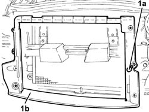
Applies to: engines: 1.6 TS; all production periods
Secure the air conditioning system condenser to the bodyshell.
1. Undo the bolts (1a) and remove the engine cooling radiator (1b).
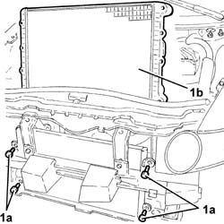
Applies to: engines: 1.6 TS; all production periods
Refitting
RemovingPlace the engine cooling radiator back in its housing and fix it using the bolts.
Release the air conditioning system condenser from the fastening on the bodyshell.
Place the air duct back in its housing and secure it using the bolts.
Proceed with the refitting 7210E10 R.R. CENTRE PILLAR .
Proceed with the refitting 1088E10 radiator cooling fan - r + r .
Proceed with the refitting 1048A10 air cleaner filtering element - replace .
Proceed with the refitting 5530B52 Battery DRIP TRAY/SUPPORT - R.R. .
Proceed with the refitting 5530B10 battery - r+r .
Connect the lower coolant outlet hose to the radiator.
Refill the engine cooling system 0010T20 coolant change .
Remove the car from the ramp.
Applies to: engines: 2.0 TS; all production periods
Removing
RefittingPosition the vehicle on the ramp.
Proceed with the removal 7055B54 under-engine guard - r r .
1. Disconnect the lower coolant outlet hose from the radiator and drain the engine coolant.
Applies to: engines: 2.0 TS; all production periods
Proceed with the removal 5530B10 battery - r+r .
Proceed with the removal 5530B52 Battery DRIP TRAY/SUPPORT - R.R. .
Proceed with the removal 1048A10 air cleaner filtering element - replace .
Proceed with the removal 1088E10 radiator cooling fan - r + r .
Proceed with the removal 7210E10 R.R. CENTRE PILLAR .
1. Undo the bolts (1a) and remove the air duct (1b).
Applies to: engines: 2.0 TS; all production periods
Fasten the air conditioning system condenser to the bodyshell.
1. Undo the bolts (1a) and remove the engine cooling radiator (1b).
Applies to: engines: 2.0 TS; all production periods
Refitting
RemovingPlace the engine cooling radiator back in its housing and fix it using the bolts.
Release the air conditioning system condenser from the fastening on the bodyshell.
Place the air duct back in its housing and secure it using the bolts.
Proceed with the refitting 7210E10 R.R. CENTRE PILLAR .
Proceed with the refitting 1088E10 radiator cooling fan - r + r .
Proceed with the refitting 1048A10 air cleaner filtering element - replace .
Proceed with the refitting 5530B52 Battery DRIP TRAY/SUPPORT - R.R. .
Proceed with the refitting 5530B10 battery - r+r .
Connect the lower coolant outlet hose to the radiator.
Proceed with the refitting 7055B54 under-engine guard - r r .
Refill the engine cooling system 0010T20 coolant change .
Remove the car from the ramp.
Applies to: engines: 3.2 V6; all production periods
Removing
RefittingPosition the vehicle on the ramp.
Drain the air conditioner coolant circuit 5040A10 Air conditioning refrigerant CIRCUIT - Draining and Refilling .
Proceed with removal 1048A48 throttle heater sleeve - r r .
Proceed with removal 5530B10 battery - r+r .
Proceed with removal 5530B52 Battery DRIP TRAY/SUPPORT - R.R. .
Proceed with removal 1048A10 air cleaner filtering element - replace .
Proceed with removal 7055B54 under-engine guard - r r .
Proceed with removal 7055B64 Engine compartment DUST shield in front wheel arch (one), left or right - R.R. .
Proceed with removal 7055B42 Additional FRONT WHEEL ARCH (one), left or right - R.R. .
Proceed with removal 7210E10 R.R. CENTRE PILLAR .
Proceed with the removal 5540B76 Front LIGHT CLUSTER with fog light (one), left or right - R.R. with interfering components removed (Right and left sides).
Proceed with removal 7025A34 bonnet lid lock (one) - r+r or repair .
Proceed with removal 7210A15 R.R. HEADLAMP HOUSING/FRONT WING CROSSMEMBER .
1. Disconnect the electrical connections from the resistances for the engine cooling fans.
 | Name | Connector |
|---|---|---|
1 | Engine fan adjustment resistor |
| Name | Connector |
|---|---|---|
1 | Engine fan adjustment resistor -2 |
2. Disconnect the electrical connections from the engine fan motors.
| Name | Connector |
|---|---|---|
2 | Engine electric fan motor |
| Name | Connector |
|---|---|---|
2 | Engine fan motor -2 |
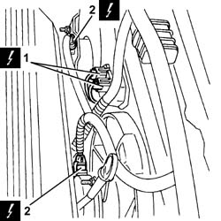
Applies to: engines: 3.2 V6; all production periods
1. Press the two rapid attachment clips, by hand, and disconnect the lower coolant outlet hose from the radiator, radiator side.
2. Loosen band and disconnect the upper coolant inlet hose to the radiator, radiator side.
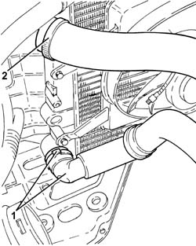
Applies to: engines: 3.2 V6; all production periods
1. Release the buttons (1a), undo the bolts (1b) and remove the engine oil cooling radiator air duct (1c).
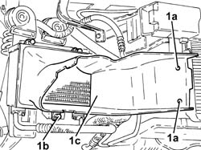
Applies to: engines: 3.2 V6; all production periods
1. Undo the bolt (1a) and disconnect the coolant inlet and outlet pipes (1b) from the air conditioner compressor.
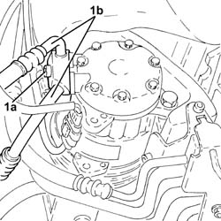
Applies to: engines: 3.2 V6; all production periods
1. Undo the nut (1a) and disconnect the intermediate coupling for the pipe from the air conditioning compressor to the evaporator (1b).
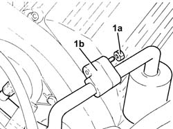
Applies to: engines: 3.2 V6; all production periods
1. Undo the bolts (1a) and disconnect the coolant inlet and outlet pipes (1b) from the air conditioner condenser.
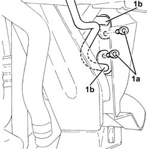
Applies to: engines: 3.2 V6; all production periods
1. Remove the engine cooling radiator (1a) complete with air conditioning condenser (1b) and fans.
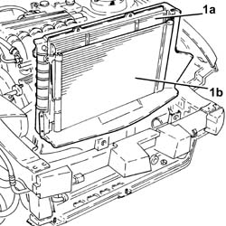
Applies to: engines: 3.2 V6; all production periods
At the bench, undo the bolts and remove the fans and single engine cooling duct.
Undo the bolts and separate the air duct and the air conditioning condenser from the engine cooling radiator.
Applies to: engines: 3.2 V6; all production periods
Refitting
RemovingAt the bench, assembly the air duct and the air conditioning condenser on the radiator and secure them using the bolts.
Place the fans with the single engine cooling duct back in their housings on the radiator and secure them using the bolts.
Place the engine cooling radiator back in its housing on the radiator complete with air conditioning condenser and fans.
1. Connect the coolant inlet and outlet pipes (1a) to the air conditioning condenser and tighten the bolts (1b) to the recommended torque.
 | Fastening | Component | Ø | Value (daNm) |
|---|---|---|---|---|
1b | Bolt | COOLANT SYSTEM FITTINGS | M6 | 0.7 ÷ 1.1 |
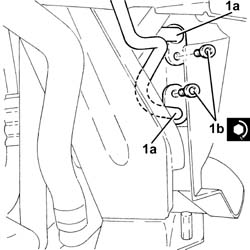
Applies to: engines: 3.2 V6; all production periods
1. Connect the intermediate coupling for the pipe from the air conditioning compressor to the evaporator (1a) and tighten the nut (1b) to the recommended torque.
| Fastening | Component | Ø | Value (daNm) |
|---|---|---|---|---|
1b | Nut | COOLANT SYSTEM FITTINGS | M6 | 0.7 ÷ 1.1 |
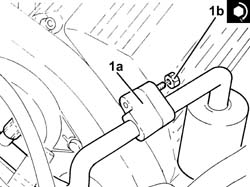
Applies to: engines: 3.2 V6; all production periods
1. Connect the flange for the coolant inlet and outlet pipes (1a) to the air conditioning compressor and tighten the bolt (1b) to the recommended torque.
| Fastening | Component | Ø | Value (daNm) |
|---|---|---|---|---|
1b | Bolt | COOLANT SYSTEM FITTINGS | M6 | 0.7 ÷ 1.1 |
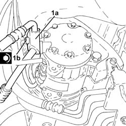
Applies to: engines: 3.2 V6; all production periods
Fit the engine oil cooling radiator air duct in its seating and secure it with the bolts and buttons.
Connect the upper coolant inlet hose to the radiator, radiator side, and tighten the band.
Connect the rapid attachment for the lower coolant outlet hose from the radiator, radiator side.
Connect the electrical connections to the engine fan motors.
Connect the electrical connections to the engine cooling fan resistors.
Proceed with refitting 7210A15 R.R. HEADLAMP HOUSING/FRONT WING CROSSMEMBER .
Proceed with refitting 7025A34 bonnet lid lock (one) - r+r or repair .
Proceed with the refitting 5540B76 Front LIGHT CLUSTER with fog light (one), left or right - R.R. with interfering components removed (Right and left sides).
Proceed with refitting 7210E10 R.R. CENTRE PILLAR .
Proceed with refitting 7055B42 Additional FRONT WHEEL ARCH (one), left or right - R.R. .
Proceed with refitting 7055B64 Engine compartment DUST shield in front wheel arch (one), left or right - R.R. .
Proceed with refitting 1048A10 air cleaner filtering element - replace .
Proceed with refitting 5530B52 Battery DRIP TRAY/SUPPORT - R.R. .
Proceed with refitting 5530B10 battery - r+r .
Proceed with refitting 1048A48 throttle heater sleeve - r r .
Refill the engine cooling system with coolant 0010T20 coolant change .
Fill the air conditioner coolant circuit 5040A10 Air conditioning refrigerant CIRCUIT - Draining and Refilling .
Proceed with refitting 7055B54 under-engine guard - r r .
Remove the car from the ramps.
Applies to: engines: 1.9 JTD 8V; all production periods
Removing
RefittingPosition the vehicle on the ramp.
7055B54 under-engine guard - r r .
1. Disconnect the lower coolant outlet hose from the radiator and drain the engine coolant.
Applies to: engines: 1.9 JTD 8V; all production periods
5530B52 Battery DRIP TRAY/SUPPORT - R.R. .
1048A10 air cleaner filtering element - replace .
1088E10 radiator cooling fan - r + r .
1. Undo the bolts (1a) and remove the air duct (1b).
Applies to: engines: 1.9 JTD 8V; all production periods
Fasten the air conditioning system condenser to the bodyshell.
1. Undo the bolts (1a) and remove the engine cooling radiator (1b).
Applies to: engines: 1.9 JTD 8V; all production periods
Refitting
RemovingPlace the engine cooling radiator back in its housing and fix it using the bolts.
Release the air conditioning system condenser from the fastening on the bodyshell.
Place the air duct back in its housing and secure it using the bolts.
1088E10 radiator cooling fan - r + r .
1048A10 air cleaner filtering element - replace .
5530B52 Battery DRIP TRAY/SUPPORT - R.R. .
Connect the lower coolant outlet hose to the radiator.
7055B54 under-engine guard - r r .
Remove the car from the ramp.
Applies to: engines: 1.9 JTD 16V; all production periods
Removing
RefittingPosition the vehicle on the ramp.
Proceed with removal 7025A12 Engine front sound insulation COVER - R.R. .
Proceed with removal 7025A14 Bonnet LID - R.R. .
Proceed with removal 1016A10 sound-proofing cover - r + r .
Ensure that the ignition key is in the OFF position, then disconnect the negative battery terminal (-).
| Name | Connector |
|---|---|---|
- | Battery |
Proceed with removal 7055B54 under-engine guard - r r .
Disconnect the coolant outlet hose from the radiator and drain the cooling system.
Proceed with removal 5530B10 battery - r+r .
Proceed with removal 5530B52 Battery DRIP TRAY/SUPPORT - R.R. .
Proceed with removal 1048A10 air cleaner filtering element - replace .
Proceed with removal 1088E10 radiator cooling fan - r + r .
Proceed with removal 7055B64 Engine compartment DUST shield in front wheel arch (one), left or right - R.R. .
Proceed with removal 7055B42 Additional FRONT WHEEL ARCH (one), left or right - R.R. .
Proceed with removal 7210E10 R.R. CENTRE PILLAR .
Proceed with removal 1084C40 Air DUCT for engine oil cooling radiator - R.R . .
1. Undo the bolt (1a) and remove the bracket (1b) complete with power assisted steering system heat exchanger pipe (1c) aside.
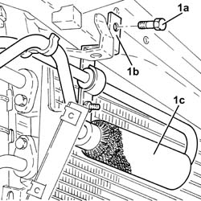
Applies to: engines: 1.9 JTD 16V; all production periods
1. Release the buttons fixing the air duct on the supercharging air/air heat exchanger to the engine cooling radiator air duct.
2. Undo the bolts (2a) and remove the engine cooling radiator air duct (2b).
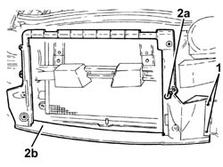
Applies to: engines: 1.9 JTD 16V; all production periods
Secure the air conditioning system condenser to the bodyshell.
1. Undo the bolts (1a) and remove the engine cooling radiator (1b).
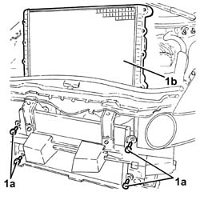
Applies to: engines: 1.9 JTD 16V; all production periods
Refitting
RemovingPlace the engine cooling radiator back in its housing and fix it using the bolts.
Release the air conditioning system condenser from the fastening on the bodyshell.
Fit the engine cooling radiator air duct in its seating and secure it with its bolts.
Fit the buttons fixing the air duct on the supercharging air/air heat exchnger to the engine cooling radiator air duct.
Place the bracket complete with power assisted steering system heat exchanger pipe back in its housing and fasten it using the bolt.
Proceed with refitting 1084C40 Air DUCT for engine oil cooling radiator - R.R . .
Proceed with refitting 7210E10 R.R. CENTRE PILLAR .
Proceed with refitting 7055B42 Additional FRONT WHEEL ARCH (one), left or right - R.R. .
Proceed with refitting 7055B64 Engine compartment DUST shield in front wheel arch (one), left or right - R.R. .
Proceed with refitting 1088E10 radiator cooling fan - r + r .
Proceed with refitting 1048A10 air cleaner filtering element - replace .
Proceed with refitting 5530B52 Battery DRIP TRAY/SUPPORT - R.R. .
Proceed with refitting 5530B10 battery - r+r .
Proceed with refitting 7055B54 under-engine guard - r r .
Refill the engine cooling system with coolant 0010T20 coolant change .
Connect the negative (-) battery terminal.
Proceed with refitting 1016A10 sound-proofing cover - r + r .
Proceed with refitting 7025A14 Bonnet LID - R.R. .
Proceed with refitting 7025A12 Engine front sound insulation COVER - R.R. .
Remove the car from the ramps.
Topics linked from this page (23)
- 0010T20 coolant change
- 1016A10 sound-proofing cover - r + r
- 1048A10 air cleaner filtering element - replace
- 1048A48 throttle heater sleeve - r r
- 1084C40 Air DUCT for engine oil cooling radiator - R.R .
- 1088E10 radiator cooling fan - r + r
- 5040A10 Air conditioning refrigerant CIRCUIT - Draining and Refilling
- 5530B10 battery - r+r
- 5530B52 Battery DRIP TRAY/SUPPORT - R.R.
- 5540B76 Front LIGHT CLUSTER with fog light (one), left or right - R.R. with interfering components removed
- 7025A12 Engine front sound insulation COVER - R.R.
- 7025A14 Bonnet LID - R.R.
- 7025A34 bonnet lid lock (one) - r+r or repair
- 7055B42 Additional FRONT WHEEL ARCH (one), left or right - R.R.
- 7055B54 under-engine guard - r r
- 7055B64 Engine compartment DUST shield in front wheel arch (one), left or right - R.R.
- 7210A15 R.R. HEADLAMP HOUSING/FRONT WING CROSSMEMBER
- 7210E10 R.R. CENTRE PILLAR
- A1B Battery ( Connectors )
- N11 Engine electric fan motor
- N12 Engine fan motor -2
- O10 Engine fan adjustment resistor
- O12 Engine fan adjustment resistor -2
Topics that link to this page (12)
- D36 ENGINE COOLANT OVERHEATING SIGNALLED BY THE INSTRUMENT / WITH VISIBLE VAPOUR VENTING
- D37 ENGINE COOLANT OVERHEATING SIGNALLED BY THE INSTRUMENT / WITHOUT VISIBLE VAPOUR VENTING
- X10 ENGINE COOLANT LEAKS
- 1004B10 power unit with manual gearbox - r + r
- 1016D20 left cylinder head - r + r and replace gasket
- 1020D38 flywheel side oil seal - replace
- 1020D51 crank shaft rear mount - apply silicone to mating surfaces
- 1024B10 engine flywheel - r + r for versions with manual gearbox
- 1810A20 clutch - r + r
- 1820A24 thrust bearing linkage - r + r
- 2110A10 manual gearbox and differential - r + r
- 2110C22 gear input shaft seals - r r